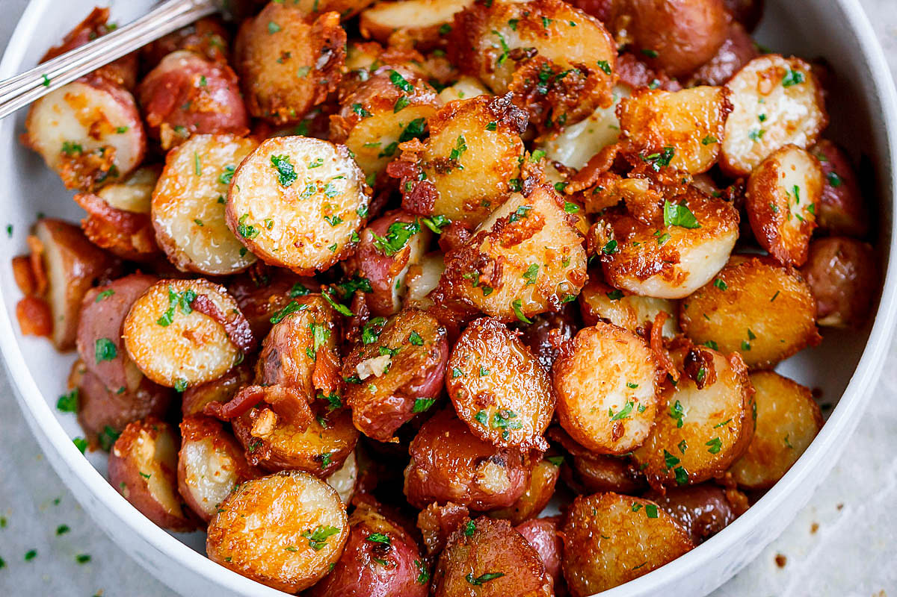

Baked Potato Parm

Description
Baked potato parm is a quick and easy recipe for you to make as an heatlhier alternative
to french fries.It is quick and easy to make for any occasion! Use it as a side for main
meal of make it in under an hour for a filling and delicious snack. The only part of this
recipe that will take any significant amount of time will be the slicing of the
potatos. These will bake and be ready to eat in 15 min once that's done!
Ingredients
- 3 pounds (1.5 kg) baby red potatoes, washed and quartered
- 1/4 cup (60ml) olive oil
- 6 large cloves of garlic finely chopped or minced
- Salt and fresh cracked black pepper
- 1 tablespoon Italian seasoning
- 3/4 cup fresh grated Parmesan cheese
- 1/2 cup unsalted butter
- Fresh chopped parsley, for garnish
- 1/2 cup crispy bacon bits (optional)
Steps
- To prepare your roasted garlic potatoes: Preheat your oven to 400ºF (200°C).
Grease a large baking sheet with non-stick spray or olive oil and set aside.
- Parboil baby red potatoes in boiling water for 5 to 8 minutes to precook them.
The potatoes will be more tender on the inside when roasting.
- In a large bowl, combine 1/4 cup of olive oil, garlic, salt, herbs, pepper, and
parmesan cheese together, mixing to combine. Add a little more olive oil if the
parmesan cheese has absorbed most of it.
- Toss parboiled potatoes through the garlic parmesan mixture to evenly coat.
- Arrange the coated potatoes cut side down in a single layer onto the prepared baking
sheet. Place the baking sheet on the bottom rack of the oven. Bake your garlic butter
parmesan potatoes for 25 minutes, turning after 15 minutes with tongs or a spatula,
until potatoes are browned and crisped at the edges.
- In the meantime, gently melt butter in the microwave and combine with fresh chopped
parsley. Remove the roasted potatoes from the oven, and drizzle with the butter parsley
sauce. Add bacon bits, toss to coat well, and serve your roasted potatoes with garlic butter
parmesan immediately. Enjoy!
Home Page